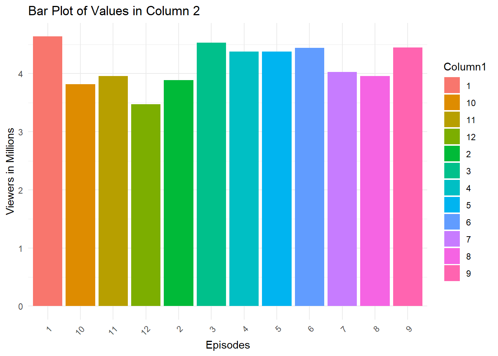
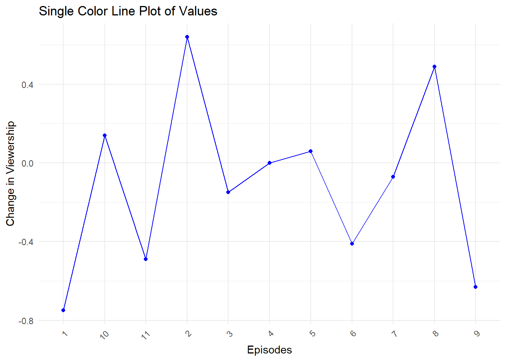

Warning: package 'ggplot2' was built under R version 4.3.1TV SHOW Report
Brief Description of the TV Show
Suits is an American television drama series created by Aaron Korsh, which premiered on June 23, 2011 on the USA Network. It revolves around Mike Ross (Patrick J. Adams), who begins working as a law associate for Harvey Specter (Gabriel Macht), despite never attending law school. The show focuses on Harvey and Mike managing to close cases, while maintaining Mike’s secret.
Logo or Shot from the Show

Basic Statistics
| Stats | Results |
|---|---|
| Mean | 4.1625000 |
| Median | 4.2050000 |
| SD | 0.3401011 |
| Min | 3.4700000 |
| Max | 4.6400000 |
| Range | 1.1700000 |
Viewership Overtime

Viewership Changes (Episode-to-episode)

Brief Description of the TV Show
Viewership declined by “0.75” million from episode “1” to 2. Somehow, Suits could regain its viewership back between episode 6 and 7 by increase of 0.06 million viewers.